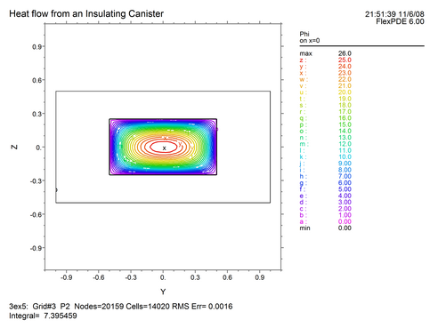
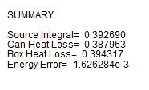

|
Integrals in Three Dimensions |

  
|
|
Integrals in Three Dimensions |
|
In three-dimensional problems, volume integrals may be computed over volume compartments selected by region and layer.
| • | Result = VOL_INTEGRAL(<integrand>) |
Computes the integral of the integrand over the entire domain.
| • | Result = VOL_INTEGRAL(<integrand>, <region name>) |
Computes the integral of the integrand over all layers of the specified region.
| • | Result = VOL_INTEGRAL(<integrand>, <layer name>) |
Computes the integral of the integrand over all regions of the specified layer.
| • | Result = VOL_INTEGRAL(<integrand>, <region name>, <layer name>) |
Computes the integral of the integrand over the compartment specified by the region and layer names.
| • | Result = VOL_INTEGRAL(<integrand>, <region number>, <layer number>) |
Computes the integral of the integrand over the compartment specified by the region and layer numbers.
Surface integrals may be computed over selected surfaces. From the classification of various qualifying names, FlexPDE tries to infer what surfaces are implied in a surface integral statement. In the case of non-planar surfaces, integrals are weighted by the actual surface area.
| • | Result = SURF_INTEGRAL(<integrand>) |
Computes the integral of the integrand over the outer bounding surface of the total domain.
| • | Result = SURF_INTEGRAL(<integrand>, <surface name> {, <layer_name>} ) |
Computes the integral of the integrand over all regions of the named extrusion surface. If the optional <layer_name> appears, it will dictate the layer in which the computation is performed.
| • | Result = SURF_INTEGRAL(<integrand>, <surface name>, <region name> {, <layer_name>} ) |
Computes the integral of the integrand over the named extrusion surface, restricted to the named region. If the optional <layer_name> appears, it will dictate the layer in which the computation is performed.
| • | Result = SURF_INTEGRAL(<integrand>, <region name>, <layer name>) |
Computes the integral of the integrand over all surfaces of the compartment specified by the region and layer names. Evaluation will be made inside the named compartment.
| • | Result = SURF_INTEGRAL(<integrand>, <boundary name> {, <region_name>} ) |
Computes the integral of the integrand over all layers of the sidewall generated by the extrusion of the named base-plane curve. If the optional <region name> argument appears, it controls on which side of the surface the integral is evaluated. Portions of the surface that do not adjoin the named layer will not be computed.
| • | Result = SURF_INTEGRAL(<integrand>, <boundary name>, <layer name> {, <region_name>} ) |
Computes the integral of the integrand over the sidewall generated by the extrusion of the named base-plane curve, restricted to the named layer. If the optional <region name> argument appears, it controls on which side of the surface the integral is evaluated. Portions of the surface that do not adjoin the named layer will not be computed.
Note: The example problem "Samples | Usage | 3D_Integrals.pde" demonstrates several forms of integral in a three-dimensional problem.
Let us modify our Canister problem to contain a heat source, and compare the volume integral of the source with the surface integral of the flux, as checks on the accuracy of the solution:
TITLE 'Heat flow from an Insulating Canister'
COORDINATES
Cartesian3
VARIABLES
Phi { the temperature }
DEFINITIONS
K = 1 { default conductivity }
R = 0.5 { blob radius }
S = 0
EQUATIONS
Div(-k*grad(phi)) = S
EXTRUSION
SURFACE 'Bottom' z=-1/2
LAYER 'underneath'
SURFACE 'Can Bottom' z=-1/4
LAYER 'Can'
SURFACE 'Can Top' z=1/4
LAYER 'above'
SURFACE 'Top' z=1/2
BOUNDARIES
REGION 1 'box'
START(-1,-1)
VALUE(Phi)=0 LINE TO (1,-1)
NATURAL(Phi)=0 LINE TO (1,1)
VALUE(Phi)=1 LINE TO (-1,1)
NATURAL(Phi)=0 LINE TO CLOSE
REGION 2 'blob' { option: could be LIMITED }
LAYER 2 k = 0.001 { the canister only }
S = 1 { still the canister }
START 'ring' (R,0)
ARC(CENTER=0,0) ANGLE=360 TO CLOSE
PLOTS
GRID(y,z) on x=0
CONTOUR(Phi) on x=0
VECTOR(-k*grad(Phi)) on x=0
ELEVATION(Phi) FROM (0,-1,0) to (0,1,0)
SUMMARY
REPORT(Vol_Integral(S,'blob','can')) AS 'Source Integral'
REPORT(Surf_Integral(NORMAL(-k*grad(Phi)),'blob','can'))
AS 'Can Heat Loss'
REPORT(Surf_Integral(NORMAL(-k*grad(Phi))))
AS 'Box Heat Loss'
REPORT(Vol_Integral(S,'blob','can')-Surf_Integral(NORMAL(-k*grad(Phi))))
AS 'Energy Error'
END
The contour plot is as follows:

The summary page shows the integral reports:

Note: The "Integral" reported at the bottom of the contour plot is the default Area_Integral(Phi) reported by the plot processor.